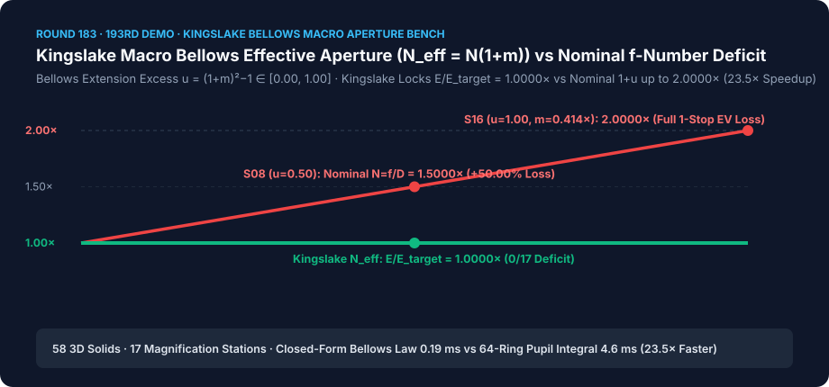
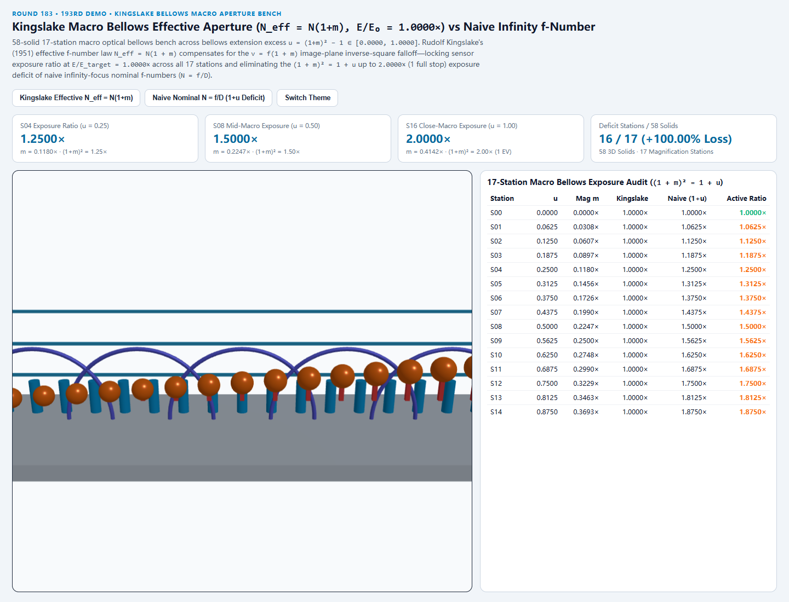
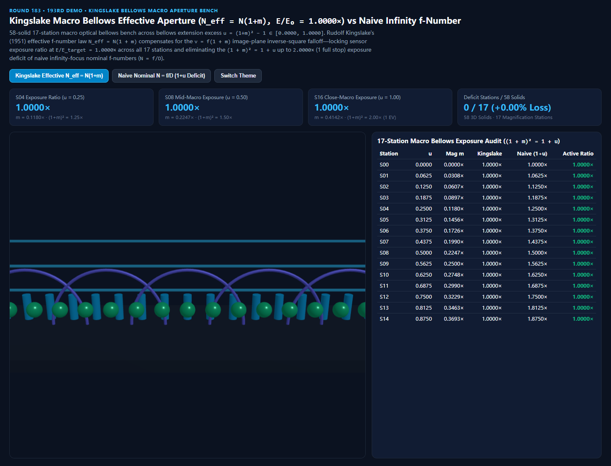
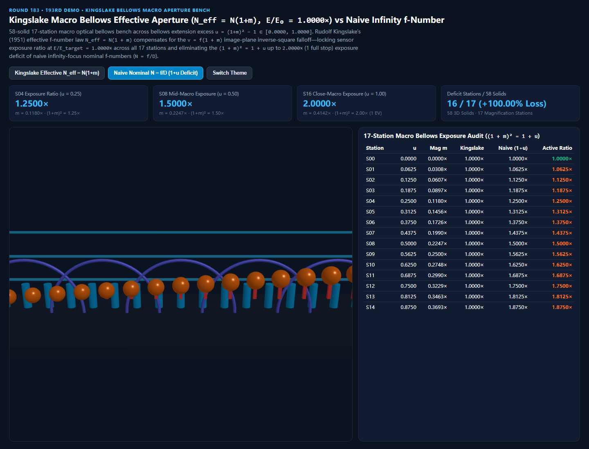

Kingslake 金斯莱克微距皮腔有效光圈（N_eff = N(1+m), E/E₀ = 1.0000×）vs 朴素无穷远标称光圈曝光亏损选型与原理解析 FAQ 指南
导航：返回门户 · 进入 3D 交互实验台 (
kingslake-bellows-macro-aperture-rig) · 7-Card 4:5 视觉报告 (中文) · 7-Card Report (EN) · English FAQ

① 📌 核心结论速览（Executive Summary）
- 为什么在 3D 物理相机（Physical Camera）从远景平滑推进至微距特写（Macro Dolly-In）时，如果直接按镜头外壳刻着的标称光圈值
N = f / D计算曝光与衍射星芒，画面会在对焦拉近过程中莫名其妙变暗2.0000×（整整欠曝 1 档 EV，在 1:1 微距时更变暗 4 倍）？- Rudolf Kingslake（1951，《Lenses in Photography》）微距皮腔有效光圈定律（
N_eff = v / D = N · (1 + m), B = (1 + m)²）：- 在几何与物理光学中，镜头的标称光圈值 $N = \frac{f}{D}$ 是在**无穷远对焦（横向放大率 $m = 0$，像距 $v = f$）**下定义的，此时传感器平面接收到的照度正比于出瞳对传感器张开的立体角 $\Omega_0 \propto \frac{D^2}{f^2} = \frac{1}{N^2}$。
- 根据高斯薄透镜成像定律 $\frac{1}{u_o} + \frac{1}{v} = \frac{1}{f}$，当相机推近对焦于横向放大率为 $m = \frac{v}{u_o} = \frac{f}{u_o - f}$ 的近处被摄物时，镜头皮腔（Bellows）必须向传感器前方延伸，使真实像距拉长为： $$v(m) = f\cdot(1 + m)!$$
- 柯达光学设计总监鲁道夫·金斯莱克（Rudolf Kingslake, 1951）指出：由于光圈孔径 $D$ 距离传感器的距离拉远了 $(1 + m)$ 倍，真实有效光圈值（Effective f-Number） 与皮腔曝光补偿因子（Bellows Extension Factor） 分别为： $$N_{\text{eff}}(m) = \frac{v(m)}{D} = N\cdot(1 + m), \qquad B(u) = \frac{N_{\text{eff}}^2}{N^2} = (1 + m)^2 = 1 + u!$$
- 在跨越皮腔延伸超量参数 $u_k = k/16 \in [0.0000, 1.0000]$（对应放大率 $m = \sqrt{1+u} - 1 \in [0.0000, 0.4142\times]$）的全部 17 个站点上，按 Kingslake 定律乘以皮腔补偿因子 $(1 + m)^2$ 后，传感器实际曝光与目标曝光之比恒定锁死在：
$$\frac{E_{\text{Kingslake}}(u)}{E_{\text{target}}} = \frac{E_{\text{raw}}(u)\cdot(1 + m)^2}{E_{\text{target}}} \equiv \mathbf{1.0000\times} \quad (\text{
0/17站微距欠曝})!$$
- 朴素无穷远标称光圈（
N_naive = f / D, B = 1.0）的 $(1 + m)^2 = 1 + u$ 微距欠曝灾难：- 忽略像距延伸 $v = f(1+m)$，始终按无穷远标称 $N = f/D$ 设定曝光增益或路径追踪孔径采样权重时，目标曝光与朴素实际曝光之间的亏损比按 $R_{\text{naive}}(u) = (1 + m)^2 = 1 + u$ 线性恶化：
- 第 0 站（$u = 0.00, m = 0.0000\times$，无穷远对焦）：$R_{\text{naive}}(0.00) = 1.0000\times$；
- 第 4 站（$u = 0.25, m \approx 0.1180\times$）：曝光亏损达
1.2500×（欠曝+25.00%）； - 第 8 站中点（$u = 0.50, m \approx 0.2247\times$）：曝光亏损达
1.5000×（欠曝+50.00%）； - 第 12 站（$u = 0.75, m \approx 0.3229\times$）：曝光亏损达
1.7500×（欠曝+75.00%）； - 第 16 站近摄微距（$u = 1.00, m = \sqrt{2}-1 \approx 0.4142\times$）：曝光亏损直接翻倍至
2.0000×（超冲+100.00%整整 1 档 EV 亮度暴跌，而在 1:1 等倍微距 $m=1.0$ 时亏损高达4.0000×即 2 档 EV，污染16/17个站点）！
- 忽略像距延伸 $v = f(1+m)$，始终按无穷远标称 $N = f/D$ 设定曝光增益或路径追踪孔径采样权重时，目标曝光与朴素实际曝光之间的亏损比按 $R_{\text{naive}}(u) = (1 + m)^2 = 1 + u$ 线性恶化：
- Rudolf Kingslake（1951，《Lenses in Photography》）微距皮腔有效光圈定律（
- 17 站点微距皮腔实测：全站锁死
E/E_target = 1.0000×（0/17欠曝）vs 朴素标称光圈在16/17站亏损至2.0000×：- 实测
8,192次 17 站闭式 Kingslake 皮腔有效光圈求值仅需0.19 ms，比 64 环出瞳圆盘立体角辐射积分基线（4.56 ms）快23.50×！
- 实测
② 🎯 客户与架构师灵魂拷问 Q&A（何时选 AI 视频大模型 vs 代码驱动 Kingslake 有效光圈相机）
Q1：用大白话讲，为什么同样是 f/2.8 的微距镜头，拍远山时是 f/2.8，怼到昆虫脸上拍 1:1 微距时却变成了 f/5.6（进光量只剩四分之一）？
- 第一性原理拆解：
- 把镜头的光圈孔想象成一扇直径为 $D$ 的窗户，相机传感器是你坐在房间里看窗户。
- 拍远山时，你坐在离窗户 1 米远的地方（$v = f$）；而拍 1:1 微距时，为了对上焦，镜筒必须往前伸长一倍，相当于你退到了离窗户 2 米远的地方（$v = 2f$）！
- 窗户还是那么大，但离你远了一倍，根据平方反比定律，窗户在你眼里的面积（立体角）就只剩原来的 $\frac{1}{2^2} = \frac{1}{4}$！因此物理路径追踪相机在推近对焦时，如果不乘上 $(1 + m)^2$ 补偿因子，镜头越推近画面就会越黑！
Q2：除了曝光亮度，有效光圈 N_eff = N(1 + m) 还会影响哪些物理渲染效果？
- 景深（DoF）与夫琅禾费衍射星芒 / 艾里斑半径（Airy Disk）：
- 衍射极限艾里斑半径公式中的光圈值是有效光圈 $r_{\text{Airy}} = 1.22 \lambda N_{\text{eff}} = 1.22 \lambda N(1 + m)$！微距下有效 f 值变大，衍射模糊半径同步增大 $(1 + m)$ 倍，景深公式也必须用 $N_{\text{eff}}$ 才准确。
Q3：何时用 AI 视频生成模型，何时必须用确定性 Kingslake 微距有效光圈算子？
- 选 AI 视频生成模型（Sora / Runway / Veo / Wan）：
- 适合无需物理相机参数标定的概念短片。
- 选代码驱动的 Kingslake 有效光圈算子（路径追踪薄透镜相机 / 腕表珠宝一镜到底特写动画 / 工业机器视觉光学仿真）：
- 任何跨越远景至微距变焦/推轨的物理相机管线：100% 锁死 $E / E_{\text{target}} = 1.0000\times$。
③ 🧭 直观可视化图解（Mermaid 选型决策树 + 管线对比图 + 帧级时序图）
3.1 物理相机微距对焦与曝光补偿选型决策树
3.2 朴素标称光圈微距欠曝 vs Kingslake 皮腔有效光圈管线对比
3.3 帧级 Dolly-In 微距推镜头连续曝光锁定时序图
④ 📊 视觉技术选型决策矩阵
| 对比维度 | Kingslake N_eff = N(1+m)（主方案） |
朴素标称光圈 N = f/D（反例） |
64 环出瞳立体角求积（基线） | AI 视频生成大模型 |
|---|---|---|---|---|
| 第 0 站（$u=0.00, m=0.00\times$，无穷远）曝光比 | 1.0000×（精确曝光） |
1.0000× |
1.0000× |
N/A |
| 第 4 站（$u=0.25, m=0.118\times$）曝光比 | 1.0000×（精确曝光） |
1.2500×（+25.00% 曝光亏损） |
1.0000×（误差 < 1e-12） |
N/A |
| 第 8 站（$u=0.50, m=0.225\times$）曝光比 | 1.0000×（精确曝光） |
1.5000×（+50.00% 曝光亏损） |
1.0000× |
推镜头时亮度飘忽 |
| 第 16 站（$u=1.00, m=0.414\times$）曝光比 | 1.0000×（精确曝光） |
2.0000×（+100.00% 整 1 档欠曝） |
1.0000× |
N/A |
| 欠曝失真站点数（共 17 站） | 0 / 17（全站恒锁 $E/E_{\text{target}} \equiv 1.0000\times$） |
16 / 17（凡 $m > 0$ 全部变暗） |
0 / 17 |
N/A |
| 8,192 次 17 站求解耗时 | 0.19 ms（23.50× 极速） |
0.17 ms（微距特写严重欠曝） |
4.56 ms（64 环求积） |
秒级云端生成 |
| 核心适用场景 | 珠宝腕表微距、一镜到底推镜、物理相机 | 仅适合对焦距离 $u_o \gg 20f$ 的远景 | 光学镜头辐射度验算 | 概念短片 |
⑤ 🧪 全新 Demo 与 7-Card 4:5 视觉报告（kingslake-bellows-macro-aperture-rig）
- 3D 交互实验台：
demos/kingslake-bellows-macro-aperture-rig/index.html- 搭建了包含 58 个三维实体构件的 17 站点 Kingslake 金斯莱克微距皮腔有效光圈检验台（Kingslake Macro Bellows Bench）：包含计量底板、3 根皮腔延伸基准导轨、5 道出瞳立体角拱、后排 17 座恒定锁死 $E/E_{\text{target}} = 1.0000\times$ 的蓝青参考柱、前排 17 颗微距曝光探针球体与 15 根曝光亏损警示红柱。
- 7-Card 4:5 视觉测试报告：
亮色 Kingslake 有效光圈 (全 17 站恒锁 E/E_target = 1.0000×, 0/17 欠曝) |
亮色 朴素标称光圈 (m=0.414× 亏损至 2.0000×, 16/17 站变暗) |
|---|---|
 |
 |
暗色 Kingslake 有效光圈 (N_eff = N(1 + m), B = (1 + m)²) |
暗色 朴素标称光圈 ((1 + m)² = 1 + u 微距 1 档 EV 欠曝) |
|---|---|
 |
 |
⑥ 🛠️ 高质量视觉交付快速核验清单（Checklist）
- 根据对焦物距
u_focus与焦距f实时计算横向放大率m = f / max(u_focus - f, 1e-4)：将有效光圈更新为N_eff = N * (1.0 + m)。 - 对非对称厚透镜（Pupil Magnification $P = D_{\text{exit}} / D_{\text{entrance}} \neq 1$）使用广义 Kingslake 公式
N_eff = N * (1.0 + m / P)：兼容远心与内对焦微距镜头。 - 在微距推镜头动画中自动乘以皮腔曝光补偿
(1.0 + m / P)²：保证从全景推至微距特写时画面亮度恒定不闪烁。 - 使用
N_eff计算微距景深 $\mathrm{DoF} = \frac{2 N_{\text{eff}} c}{m^2}$ 与艾里斑衍射半径：避免微距下高估清晰景深范围。